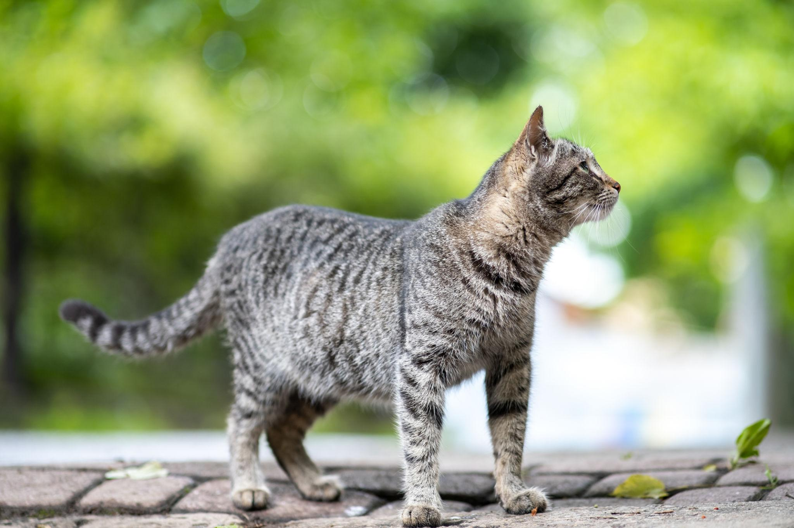
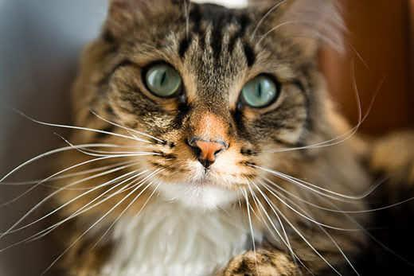
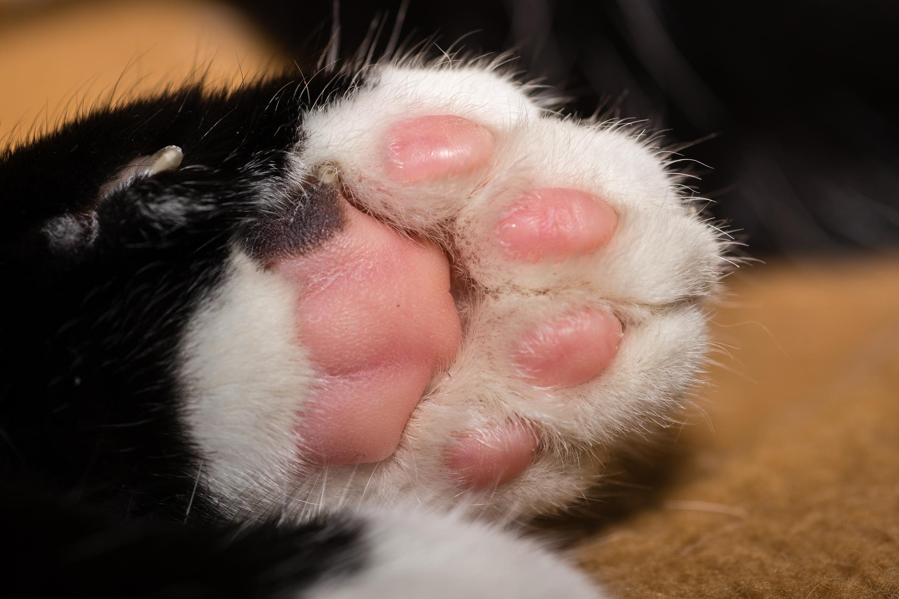
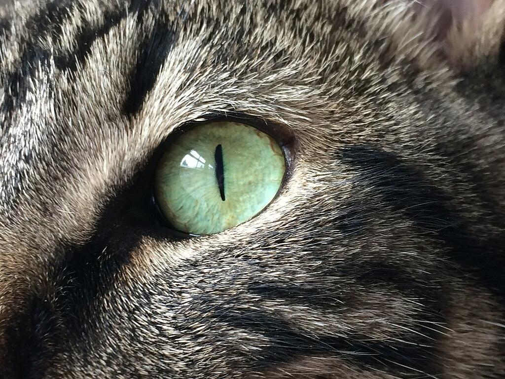

Kedilerin vücutları esnek, kasları güçlü ve refleksleri hızlıdır. Keskin pençeleri, hassas kulakları ve çevrelerini algılamalarına yardımcı olan bıyıkları bulunur. Gözleri az ışıklı ortamlarda insanlara göre daha iyi görmelerini sağlar. Ayrıca dengelerini korumalarına yardımcı olan kuyrukları vardır.